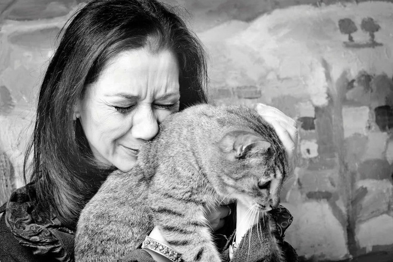

Mèo có lẽ là một trong những loài động vật có vẻ ngoài vô tư và lạc quan nhất. Dù vậy, chúng đôi khi cũng có những biểu hiện giống như con người đang khóc. Mũi và mắt Mèo sẽ có những lúc phát đỏ và có nước mắt chảy ra, mỗi lần như vậy chúng ta thường nghĩ rằng chú mèo nhà mình đang gặp vấn đề về mặt cảm xúc. Thực tế, khoa học đã đưa ra lời giải thích thế nào cho hiện tượng này?
Các nhà nghiên cứu đã phát hiện ra rằng loài mèo thực sự có những cảm xúc cơ bản giống con người. Chính vì thế, loài mèo có thể hiểu được biểu cảm khuôn mặt con người cũng như đoán xét được thái độ của chủ nuôi đối với chúng.
Về các yếu tố cảm xúc, loài mèo có những biểu hiện mà chủ nuôi có thể lưu tâm nhận ra sau một thời gian gần gũi. Một chú mèo hạnh phúc có thể rú lên, chà xát và tỏ ra hòa đồng hơn với con người cũng như các loại vật nuôi khác trong nhà. Lúc đang buồn, chúng hay tìm chỗ né tránh, mất cảm giác ngon miệng hoặc trở nên kém năng lượng hơn.
cạnh đó, mèo khi tức giận hoặc sợ hãi có thể rít, cong lưng, gầm gừ và vung tay cào vào người hoặc động vật khác. Những con mèo lo lắng, tức giận hoặc buồn bã có thể phát ra những âm thanh tương tự như tiếng rên rỉ hoặc tiếng thút thít của con người. Những tiếng động này là dấu hiệu cho thấy cảm xúc của một con mèo, và theo nghĩa đó, con vật đang khóc.
Trên trái đất, con người là loài động vật hiếm hoi khóc ra nước mắt khi trải qua cảm xúc kích động (khi buồn hoặc khi vui). Loài mèo lại không giống như vậy.

Mắt mèo sẽ chảy nước vì một số lý do, nhưng tất cả chúng đều bắt nguồn từ vấn đề sức khỏe chứ không xuất phát từ vấn đề cảm xúc. Các nguyên nhân gây chảy nước mắt ở mèo có thể kể đến do việc mắt bị kích ứng từ các dị vật hoặc vết xước từ một con mèo khác. Nước mắt cũng có thể chảy ra khi mèo mắc các bệnh truyền nhiễm như nhiễm trùng đường hô hấp trên.
Những lý do khác cho đôi mắt đẫm lệ của mèo bao gồm viêm kết mạc (mắt hồng), dị ứng và các vấn đề về biến dị cấu trúc sọ.
Tóm lại, nếu chủ nuôi nhìn thấy chú mèo nhà mình đang chảy nước mắt, điều đó không liên quan tới vấn đề cảm xúc. Thay vào đó, người chủ cần phải nhận thức rằng đang có vấn đề không ổn về mặt thể chất của thú nuôi. Nếu việc chảy nước mắt diễn ra thường xuyên, chủ nuôi nên mang mèo tới kiểm tra tại các trung tâm thú y.